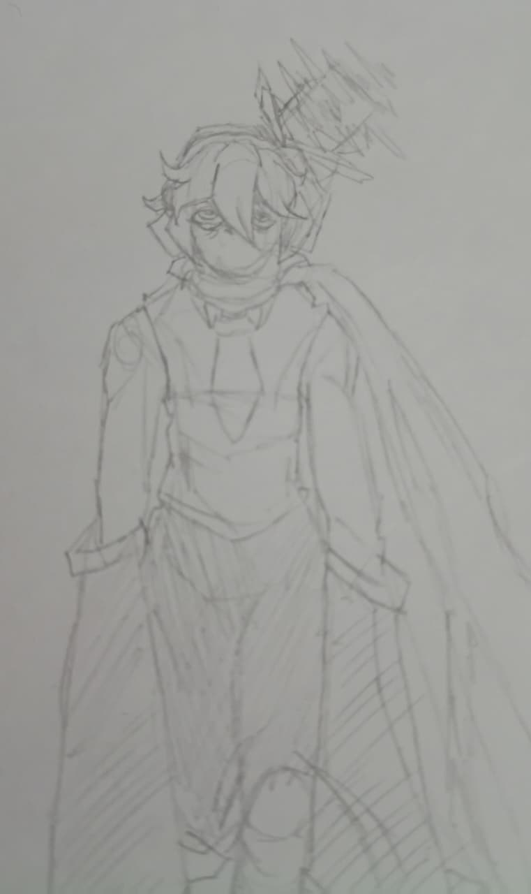

"I GOT YOU, I GOT YOU, NOW YOU ARE MINE!"
Neru.64 é uma creepypasta que utiliza da aparência da Neru como forma de induzir uma sensação de estranheza, tendo em vista que a personagem só veio a existir 12 anos depois, e também serve para criar um gancho entre os eventos da história e as principais figuras que acaba conectando ambas.
Neru.64

Aparência
Estréia
Aparições
Criadores
Criador Original
Dublador
Data de concepção
Informação Biográfica
Pseudônimos
Gênero
Pronomes
Espécie
Alinhamentos
Ocupação
Amizades
Vítimas
Contador de assassinatos
Começos
Nevan Aiken era um jovem estudante, amigo de MIchal Haesel e Kassandra Tate. Um dia, os três decidiram se unir e fazer um pacto de suicídio, em que os três se matariam depois de cometerem um massacre no colégio deles. No entanto, quando chegou a hora de cumprirem o pacto, apenas Nevan prosseguiu com o plano. Por conta do pacto, sua alma ficou aprisionada à um cartucho de um videogame, seu jogo favorito, Mario64.
Aparência
Neru.64 Se manifesta de duas formas. Uma primeira forma que aparenta ser mais inofensiva, sua aparência é, essencialmente, identica a Neru, possuindo o mesmo cabelo loiro claro preso em um longo rabo de cavalo lateral, olhos amarelos e um uniforme escuro com detalhes em amarelo inspirado diretamente no traje original da Hatsune Miku. O mesmo código de identificação DEN2 no braço. Até mesmo o acessório central da personagem, o celular flip amarelo, se manteve. Ela tem uma face eternamente marcada por impaciência, sarcasmo e aparente desinteresse. O diferencial é, como ela está presa em um jogo de 1996(Mario 64), sua forma é caracterizada por Modelos LowPoly e texturas de baixa resolução. Sua segunda forma se porta de forma mais agressiva, o longo rabo de cavalo fica amarrado em seu pescoço como uma corda apertada, após a seção amarrada, depois ele continua e vai até encostar no chão, a ponta do cabelo se torna uma mão enorme que serve de "Suporte" para ela, que fica suspensa com os braços pra baixo, sua face não possui uma boca, e possui olhos cansados, que ficam perpetuamente olhando para frente
A história
Em 2015, uma cópia caseira de Super Mario 64 foi encontrada por um usuário do Reddit chamado "2teto4u". Ele não explica diretamente a origem do cartucho, mas acha curioso que ele tenha um pequeno adesivo da Vocaloid Akita Neru colado. Ele decide colocar o jogo para rodar mais tarde. Quando 2teto4u começou a jogar, ele percebeu que havia algo estranho com essa cópia, isso ficou mais evidente quando ele chegou na fase Cool Cool Mountain, ao perceber que o bebê pinguim estava agindo de forma diferente que o normal, Nevan Aiken, Michael Haesel e Kassandra Tate. Os três fizeram um pacto de suicídio, planejando tirar a própria vida após cometerem um massacre na escola onde estudavam. Entretanto, no fim, apenas Nevan cumpriu o pacto e morreu. Após sua morte, Nevan entrou no cartucho do jogo (ainda sem explicação de como isso aconteceu), e sua alma acabou se dividindo em duas partes: Neru: É a parte de Nevan que contém apenas os sentimentos que ele experimentou no momento de sua morte. Seu único objetivo é tomar o controle do cartucho e se tornar a protagonista do jogo, recebendo a atenção que acredita sempre ter merecido. Neru é uma mulher trans. P-02: É a alma de Nevan que ainda conserva suas memórias. Ele tenta auxiliar o jogador, "2teto4u", funcionando como uma espécie de guia. Neru, por sua vez, só quer ser protagonista uma vez na vida.
Trivia
P-02 Não produz nenhum som e persegue o jogador pela fase Cool Cool Mountain Na primeira fase, Bob-Omb Battlefield, é possível avistar a Neru assistindo o jogador à uma distância fixa do Personagem do joador Na fase Dire, Dire Docks a água apresenta uma textura diferente do normal e sons estranhos podem ser ouvidos quando o personagem se encontra submerso quase como mensagens Na fase Whomps fortress, Neru começa a interferir discretamente na movimentação dos elementos. Plataformas mudam de posição quando Mario não está olhando. Algumas escadas levam a lugares diferentes dependendo do caminho escolhido. durante o confronto com Whomp King, Neru aparece atrás dele, imitando seus movimentos. Quando Whomp cai, ela continua de pé, mesmo sem qualquer colisão com o chão. Na Jolly Roger Bay, acontece o primeiro contato que deixa 2teto4u assustado A fase possui seu oceano, o navio afundado e suas cavernas submarinas. Entretanto, os sons começam a desaparecer quando Mario mergulha, como se o jogo estivesse no mudo independente do quanto ele tenta aumentar o som. Neru aparece dentro do navio, observando o jogador através das janelas. Ela parece estar falando, mas não há áudio. quando Mario encontra o tesouro do navio, uma das caixas contém um pequeno celular amarelo. A tela mostra uma mensagem: "1 NEW MESSANGER FROM: ■■■■■■■■■" e o jogo volta ao menu principal sem explicação agora com Neru podendo ser vista na tela de início e mais algo interessante, quando se entra na fase novamente o telefone amarelo agora aparece no canto do lado esquerdo da tela como se fosse uma espécie de item especial o telefone parece emitir um som de notificação toda vez que Neru aparece por perto e é uma forma de comunicação entre Neru ou (Nevan em casos específicos) com o jogador